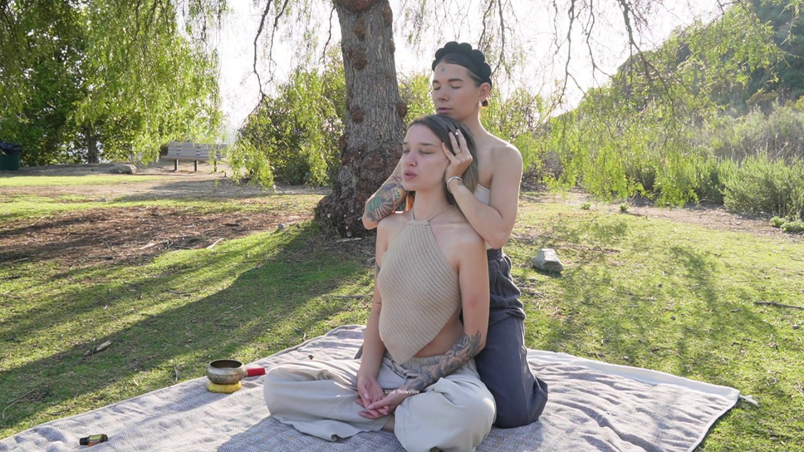

Journal
Notes from the practice.
Essays on touch, somatics, breath, trauma, and the craft of bodywork. Written between sessions.
All essaysTodos los ensayosTodos os ensaiosAlle EssaysTutti i saggiTous les essaisВсе эссеУсі есеї
The full archiveEl archivo completoO arquivo completoDas vollständige ArchivL’archivio completoL’archive complèteПолный архивПовний архів
Updated regularly

Somatics · 6 minSomática · 6 minSomática · 6 minSomatik · 6 Min.Somatica · 6 minSomatique · 6 minСоматика · 6 минСоматика · 6 хв
How touch heals traumaCómo el tacto cura el traumaComo o toque cura o traumaWie Berührung Trauma heiltCome il tocco guarisce il traumaComment le toucher guérit le traumaКак прикосновение исцеляет травмуЯк дотик зцілює травму

For students · 5 minPara alumnas · 5 minPara alunas · 5 minFür Schüler·innen · 5 Min.Per allieve · 5 minPour élèves · 5 minДля учениц · 5 минДля учениць · 5 хв
Can anyone learn touch therapy?¿Puede cualquiera aprender terapia del tacto?Qualquer pessoa pode aprender terapia do toque?Kann jede·r Berührungstherapie lernen?Chiunque può imparare la terapia del tocco?Tout le monde peut-il apprendre la thérapie par le toucher ?Может ли каждый научиться терапии прикосновения?Чи може кожен навчитися терапії дотику?

Craft · 4 minOficio · 4 minOfício · 4 minHandwerk · 4 Min.Mestiere · 4 minMétier · 4 minРемесло · 4 минРемесло · 4 хв
Aromatherapy in massageAromaterapia en el masajeAromaterapia na massagemAromatherapie in der MassageAromaterapia nel massaggioAromathérapie en massageАроматерапия в массажеАроматерапія в масажі

Philosophy · 5 minFilosofía · 5 minFilosofia · 5 minPhilosophie · 5 Min.Filosofia · 5 minPhilosophie · 5 minФилософия · 5 минФілософія · 5 хв
Soul Touch is an art, here’s whySoul Touch es un arte, aquí está el porquéSoul Touch é uma arte, eis porquêSoul Touch ist eine Kunst, hier warumSoul Touch è un’arte, ecco perchéSoul Touch est un art, voici pourquoiSoul Touch, это искусство, и вот почемуSoul Touch, це мистецтво, ось чому

Practice · 3 minPráctica · 3 minPrática · 3 minPraxis · 3 Min.Pratica · 3 minPratique · 3 minПрактика · 3 минПрактика · 3 хв
Why foot exercises are essentialPor qué los ejercicios de pies son esencialesPorque os exercícios para os pés são essenciaisWarum Fußübungen essenziell sindPerché gli esercizi per i piedi sono essenzialiPourquoi les exercices des pieds sont essentielsПочему упражнения для стоп так важныЧому вправи для стоп такі важливі

Foundations · 4 minFundamentos · 4 minFundamentos · 4 minGrundlagen · 4 Min.Fondamenti · 4 minFondamentaux · 4 minОсновы · 4 минОснови · 4 хв
What is psychosomatic?¿Qué es lo psicosomático?O que é o psicossomático?Was ist psychosomatisch?Che cos’è lo psicosomatico?Qu’est-ce que le psychosomatique ?Что такое психосоматика?Що таке психосоматика?
Stay close
New essays, once a month.Ensayos nuevos, una vez al mes.Ensaios novos, uma vez por mês.Neue Essays, einmal im Monat.Nuovi saggi, una volta al mese.Nouveaux essais, une fois par mois.Новые эссе, раз в месяц.Нові есеї раз на місяць.
No noise. Just the practice, in writing.